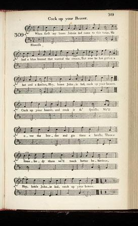
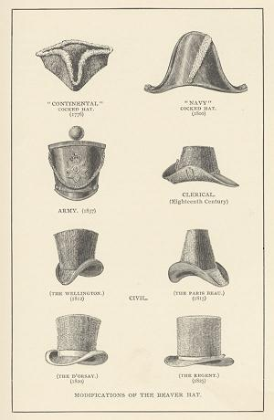
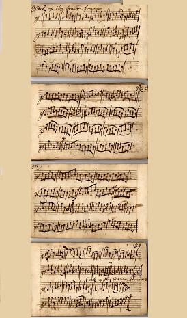

Cock up Your Beaver
Redresse ton bonnet de castor
Text by Robert Burns
Scots Musical Museum Vol. IV N°309, page 319 (1792)
Hogg's Jacobite Relics, Second Series N°64 (1821)



Tune - Mélodie
"Scots Musical Museum" (1787 -1803) and Hogg's "Jacobite Relics, 2nd Series" N°64.
Atkinson MS Version 1694 (Jig and variation set, ionian)
|
To the tune: This tune, first published in 1686 in the "Dancing Master" (7th edition) by John Playford, under the title "Johnnie, Cock thy Beaver", exists in a no-end of Scottish, Irish, Cumbrian and Northumbrian variants under different titles: "Horse and Away to Newmarket Races", "Fenwick of Bywell", "Gary Owen", "Galloping over the Cow Hill". It is to be found, among others: in Atkinson's MS., 1694 ; in Durfey's "Pills", 1719, n° 332, set to a semi-political song beginning: 'To horse, brave boys of Newmarket, to horse!'; in Sinkler's MS., Glasgow, 1710; in Oswald's Companion, c. 1755, vii. 2; and in McGibbon's Scots Tunes, 1755, 20. Hogg mentions "an original air , something like 'Hooly and Fairly'". The "Dancing Master" (first edition: The "English Dancing Master") is a dancing manual containing the music and instructions for English Country Dances. It was published in several editions by John Playford and his successors from 1651 until c1728. The first edition of The Dancing Master contained 105 dances with single line melodies. Other tunes have a similar structure: "O'er the water tae Charlie" (in homonymous song ), "Lochiel's March" (in "Cumha le Lochial"), and "The Auld Gray Mare" (in "Queen Ann")... Tunes sequenced by Ch. Souchon |
A propos de la mélodie: Cette mélodie, publiée pour la première fois en 1686 dans le "Dancing Master" ("Le Maître à danser") de John Playford, sous le tire " Johnnie, Cock thy Beaver", a donné lieu à des variantes les plus diverses en Ecosse, Irlande et Northumbrie, connues sous différents noms:"Horse and Away to Newmarket Races", "Fenwick of Bywell", "Gary Owen", "Galloping over the Cow Hill". On la trouve, entre autres, dans le manuscrit Atkison (1694), dans les "Pillules contre la morosité" de Durfey (1719), n°332, où elle accompagne une chanson semi-politique qui commence ainsi: "En selle, les braves de Newmarket, en selle!"; dans le manuscrit Sinkler de Glasgow (1710); dans le "Vademecum" d'Oswald,( vers 1755), vii. 2; et dans les "Mélodies écossaises" de McGibbon, N°20(1755). Hogg parle d'"un air original, qui ressemble à 'Hooly and Fairly'". Le "Maître à Danser" (appelé "Le Maître à danser anglais" dans la 1ère édition) est un manuel de danse qui indiquait la musique et la manière de danser les contredanses anglaises. Il fut publié en plusieurs fois par John Playford et ses successeurs entre 1651 et 1728 environ. La première édition contenait 105 danses dont elle donnait la ligne mélodique. D'autres chants présentent des analogies avec cette mélodie: "Passeur conduis-moi à Charlie!" (dans le chant du même nom) ), "La marche de Lochiel" (dans "Cumha le Lochial"), et "La vieille jument grise" (dans "la Reine Anne")... Mélodies sequencées par Ch. Souchon |

|
COCK UP YOUR BEAVER 1. When first my brave Johnny lad came to this town, He had a blue bonnet that wanted a crown But now he has gotten a hat and a feather Hey, brave Johnny lad, cock up [1] your beaver [2]! 2. Cock up your beaver and cock it fu' sprush [3] We'll over the border and gie them a brush. There's somebody there we'll teach better behaviour Hey, brave Johnny lad cock up your beaver! ........................ 3. Cock it up right, and fauld it nae down, [4] And cock the white rose [5] on the band o' the crown; Cock it o' the right side, no on the wrang, And yese be at Carlisle [6] or it be lang. 4. There's somebody there that likes slinking and slav'ry, Somebody there that likes knapping and knav'ry; But somebody's coming will make them to waver. Hey, brave Johnnie lad, cock up your beaver! 5. Sawney was bred wi' a broker o' wigs, But now he's gaun southward to lather the Whigs, And he's to set up as their shopman and shaver. Hey, brave Johnnie lad, cock up your beaver! 6. Jockie was bred for a tanner, ye ken, But now he's gaun southward to curry goodmen, With Andrew Ferrara [7] for barker and cleaver. Hey, brave Johnnie lad, cock up your beaver! 7. Donald was bred for a lifter o' kye [8], A stealer o' deer, and a drover forbye, But now he's gaun over the border a blink, And he's to get red gowd to bundle and clink. 8. There's Donald the drover, and Duncan the caird, And Sawney the shaver, and Logic the laird; These are the lads that will flinch frae you never. Hey, brave Johnnie lad [9], cock up your beaver! |
REDRESSE TON BONNET DE CASTOR 1. La première fois que Jeannot parut céans, Son pauvre bonnet bleu manquait fort d'ornement. Maintenant il arbore une coiffe à plumet. Ce chapeau de castor [2], il faut le redresser [1]! 2. Il faut le redresser et l'orner d'un rameau [3] Pour aller chez l'Anglais et lui frotter les os. Il est quelqu'un là-bas qui nous fait bien du tort Jeannot, redresse-le, ce chapeau de castor! .................................. 3. Ce chapeau qu'il ne faut point incliner trop bas,[4] Doit porter une rose blanche [5] au côté droit; Penche-le comme le ferait un vrai dandy, Il est temps, car Carlisle [6] n'est plus loin d'ici. 4. Il est là-bas quelqu'un dont l'intrigue et la ruse Sont le pain quotidien dont il use et abuse; Mais un autre viendra le faire vaciller. Ce chapeau de castor, il faut le redresser! 5. Alex a grandi chez un marchand de perruques, Au sud, c'est aux Whigs qu'il vient savonner la nuque, Il vient tenir boutique et être leur barbier. Hé, Jeannot, ton chapeau, il faut le redresser! 6. A l'état de tanneur Jockie pouvait prétendre. Au sud, à corroyer les gens il veut apprendre, André de Ferrare [7] entre l'écorce et l'aubier Hé, Jeannot, ton chapeau, il faut le redresser! 7. Donald de son métier était voleur de vaches, [8] Braconnier, ou bouvier parfois: c'était sa tâche, Mais s'il a franchi la frontière, désormais, C'est de l'or qui tinte et qui luit qu'il veut palper. 8. Or Donald le bouvier et Duncan l'étameur, Et Alex le barbier et Logie le seigneur; Ne vont point par vous se laisser intimider. Hé, Jeannot [9], ton chapeau, il faut le redresser! Traduction Ch. Souchon (c) 2010 |
|
[1] Cock up: wear your hat at a rakish angle. [2] Beaver: is now generally understood as a beaver top hat. Till 1776 it referred to a three-cornered hat (see picture above). [3] ...and cock it fu' sprush: this fragment of an old song was much improved at the hands of Burns. The second verse is Burns' own work. ("Sprush" means "spruce"). The original MS (now kept in the British Museum), which Burns completely changed in 1792 was as follows: "Cock up your beaver, cock up your beaver Hey, my Johnnie lad, cock up your beaver! Cock up your beaver and cock it nae wrang We'll a' to England ere it be lang." [4] ...and fauld it nae down: This stanza and the next ones are the verses allegedly missing in Johnson's "Museum". They are given by Hogg in his "Jacobite Relics 2nd Series", under N° 64, with the remark: "Johnson in his 'Museum' has made sure of leaving out all that may be misconstrued, by publishing only one verse to suit the air." (Due to a certain family likeness -the list of callings- with the "fake" "Donald McGillavry" , one could suspect the Ettrick shepherd to have composed these stanzas, all the more so, as he says nothing as to his authority for this addition.) [5] White rose: Jacobite symbol. [6] Carlisle: first English city south of the Border. [7] Andrew Ferrera: Andrew Ferrara was a make of sword-blade highly esteemed in Scotland in the 16th and 17th centuries. (Wikipedia) [8] Lifter o' kye: The cattle droving business developed in the Highlands during the seventeenth century. So did "reiving" (=robbing) of livestock from the Lowlands, returned against payment of "tascal". Some clans offered protection against such raids on terms not dissimilar to blackmail (Wikipedia). [9] Johnnie Lad: Like "Bonnie Highland laddie", a standard name appearing in many songs, for instance in David Herd's Manuscripts, song N°28, page 128, (1769-1776) that is to be found with alterations and an additional verse, probably by Burns, in Johnson's "Museum", vol. IV, N°357 (1792). HEY, HOW, MY JOHNIE LAD Tune Sequenced by Ch. Souchon though the "Museum" sets it to the "Lasses of the Ferry". Heh, how, Johny lad, ye're no sae kind's ye sud ha been, Sae weel's ye might hae touzled and sweetly pried my mow bedeen. Heh, how, Johny lad, ye're no sae kind's ye sud ha been. 2. My father he was at the pleugh, my mither she was at the mill, My billie he was at the moss and no ane near our sport to spill. The fint a body was therein, ye need na fley'd for being seen. Heh, how, Johny lad, ye're no sae kind's ye sud ha been. 3. But I man hae anither jo, wha's love gangs never out o' mind, And winna let the mamens pass, whan to a lass he can be kind: Then gang yere ways to blinking Bess, nae mair for Johny shal she green. Heh, how, Johny lad, ye're no sae kind's ye sud ha been. |
[1] Redresser: le camper sur le coin de l'œil.. [2] Chapeau de castor: désigne aujourd'hui, généralement, un chapeau haut-de-forme. Jusque vers 1776 l'expression désignait un tricorne (cf. illustration ci-dessus). [3] ...et l'orner d'un rameau: ce fragment de chant ancien a été métamorphosé par Burns. Le second couplet est l'œuvre de Burns. L'original (manuscrit du British Museum), que Burns modifia complètement en 1792, était comme suit: 1 bis. Redresse ton chapeau, redresse ton chapeau! Hé, Jeannot, mon garçon, redresse to chapeau! Abaisse ton chapeau et mets-le comme il faut! Nous partons tous pour l'Angleterre. Cela ne va plus tarder. [4] ...incliner trop bas: Cette strophe et les suivantes sont celles censées manquer dans le "Musée de Johnson". Hogg signale que: "Johnson dans son 'Musée' a pris soin de ne pas reproduire les couplets difficiles à interpréter en se limitant à un seul". (En raison d'un certain air de famille -énumération de professions- avec la "forgerie" "Donald McGillavry" , on est en droit de soupçonner le Berger d'Ettrick d'avoir composé lesdits couplets dont il n'indique pas la provenance). [5] Rose blanche: le symbole Jacobite. [6] Carlisle: première ville anglaise au sud du Border. [7] André de Ferrare: Andrew Ferrara était une marque de lames d'épées qui jouissait d'un grand renom dans l'Ecosse des 16ème et 17ème siècles. (Wikipedia) [8] Voleur de vaches: La transhumance du bétail ses développa dans les Highlands au cours du 17ème siècle. il en alla de même de la pratique dite "reiving" (=razzia) sur les troupeaux des Basses Terres, restitués contre le paiement d'un "tascal". Certains clans assuraient leur protection contre ces vols en des termes ressemblant fort à du chantage. (Wikipedia). [9] Jeannot (Johnnie Lad): Comme "Bonnie Highland laddie", une appellation standard que l'on retrouve dans plusieurs chants , tels que le chant N°28 des Manuscrits de Davis Herd, page 128 (1769- 1776) qui figure également, modifié et augmenté d'une strophe , sans doute par Burns, dans le "Musée" de Johnson, volume IV, sous le n° 357 (1792). HE, HO, MON JEANNOT Mélodie Sequencée par Ch. Souchon bien qu'il soit associé dans le "Musée" à "Lasses of the Ferry" (Les filles du bac). 1. Hé, hé, ho, Jeannot, écoute, tu manques à tes devoirs, Hé, ho, Jeannot, écoute, tu manques à tes devoirs, L'eau me venait à la bouche, lorsque tu me lutinais Hé, hé, ho, Jeannot, écoute, ne te laisse pas aller! 2. Mon père est loin, il laboure, et ma mère n'est pas là. Mon frère, il est à la messe: rien pour troubler nos ébats. Dans tout le logis personne, pas besoin de se cacher. Hé, hé, ho, Jeannot, écoute, ne te laisse pas aller! 3. Je peux en trouver un autre, moins oublieux de l'amour Qui quand l'instant est propice, pour rendre service accourt. Vas-t-en donc, Bess te reluque. Jeannot, vas la consoler! Hé, hé, ho, Jeannot, écoute, ne te laisse pas aller! |